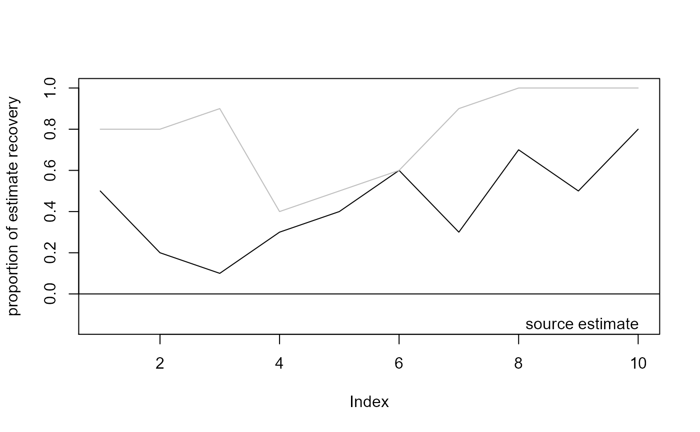

R/robustness.r
robustness.Rdrun robustness analysis for a source estimate by subsampling individual events.
robustness(
x,
type = c("edm", "backtracking", "centrality"),
prop,
n = 100,
...
)data.frame, dataset with individual events and their magnitude, to be passed to aggr_data
character, specifying the method, 'edm', 'backtracking' and 'centrality' are available.
numeric, value between zero and one, proportion of events to be sampled
numeric, number of resamplings
parameters to be passed to origin methods origin_edm, origin_backtracking or origin_centrality
data.frame with columns
est origin estimated when all data is evaluated
rob estimate uncertainty, computed as the proportion of resamplings when origin estimate was recovered
We create subsamples of individual events and their magnitude using a sampling proportion p in [0, 1]. After aggregating the data, we apply the source estimation approach. Using this result, we deduce the relative frequency of how often the source estimate obtained with the complete data set can be recovered by source estimation based on the subsample. Thus, the estimate robustness is assessed by the proportion of estimate recovery.
# generate random delay data
data(ptnAth)
require(igraph)
dat <- data.frame(node = sample(size = 500, make.names(V(ptnAth)$name), replace = TRUE),
time = sample(size = 500, 1:10, replace = TRUE),
delay = rexp(500, rate=10))
# compute effective distance
net <- igraph::as_adjacency_matrix(ptnAth, sparse=FALSE)
p <- net/rowSums(net)
eff <- eff_dist(p)
#> Computing the effective distance between 51 nodes:
#> 1...................................................done
colnames(eff) <- paste('x.',colnames(eff),sep='')
# run robustness analysis
r5 <- robustness(x=dat, type='edm', prop=0.5, n=10, distance=eff)
#> Run robustness analysis for source estimate:
#> ..........
summary(r5)
#> Length Class Mode
#> est 10 -none- character
#> rob 10 -none- numeric
plot(r5)
# compare results
r9 <- robustness(x=dat, type='edm', prop=0.9, n=10, distance=eff)
#> Run robustness analysis for source estimate:
#> ..........
plot(r9, add=TRUE, col='gray')
